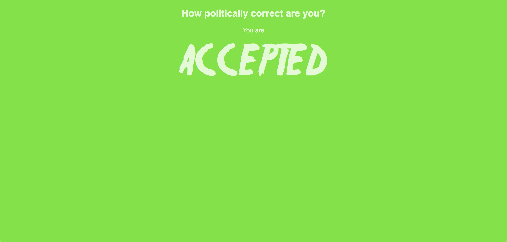
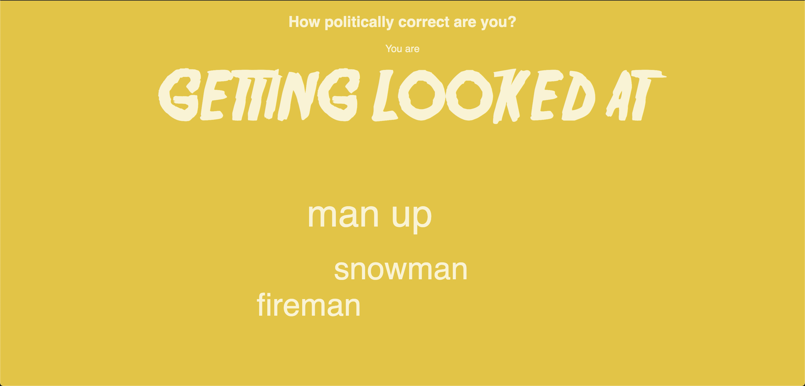
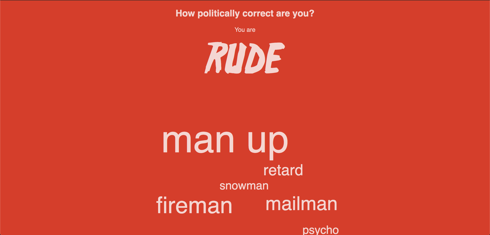

Tracking Political Correctness [2020]



As part of our course in designing interactions, we had the following assignment: to design and implement a screen-based interface prototype for a reflective self-tracking application. My group and I decided to track our ‘political correctness’, and create an app that helps users speak politically correct and gender neutral. There were two directions our assignment could go - our design could be practical or critical - as a helpful tool, or as a means of provoking the debate around political correctness.
Background: Political correctness is a term used to describe languages, policies, or measures that are intended to avoid offence or disadvantage to members of particular groups in society. The fear of being labelled "politically incorrect" not only keeps politicians from engaging in honest debates, but also employees and students in organisations as they go about the daily work. The increasing expectations for people to use gender neutral words is evident for instance in Sweden, where they have adopted the gender neutral “hen” word as an alternate for “han” or “hun” in their official language. In the European Parliament, they also have guidelines and rules for employees about how to speak in a gender neutral language.
Concept: The final prototype was a website that listens to a users speech (p5.speech.js), and then recognise and display the politically incorrect words, that we ourselves had defined (in an array). As politically incorrect words were said, the screen would change text, as well as the background-color; moving from green (acceptable) to red (rude). In addition, the politically incorrect words would be displayed on the screen, and increase in size, the more they were mentioned. Our concept can be adapted to work with different sets of word-lists, making it applicable to many different contexts. If we were to think of our design as a helpful tool, then we could imagine it in situations where users would like to use some words less, like “you know” and “such”, or controlling the usage of swearwords (i.e. around children). In addition, we imagined it in a corporate context: Vibration feedback for smartphone app that you can have in your pocket while presenting to an audience. However, we thought more fo provoking people with our design, and presenting a debate on: how far out has political correctness? Is there an extreme? Is it needed? What are people’s personal standpoint on the matter? Some might be offended by the concept, others might see it as a way of starting a friendly debate. The idea is open.